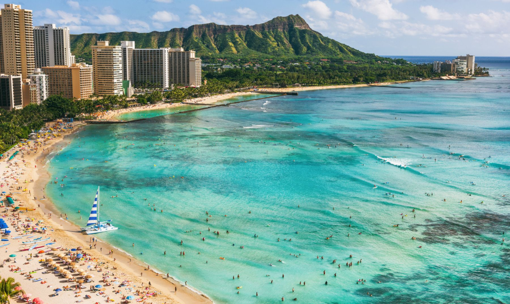
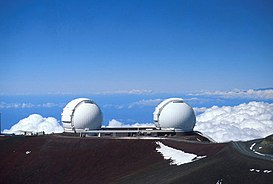

Jump to sections: Basic info Places to visit
If you come to Hawaii you'll see these beauties!
Desde playas con las olas más grandes del mundo, donde de hecho se celebran los campeonatos de Surf más importantes del mundo,
hasta playas calmas y tranquilas, o reservas marinas donde hacer snorkel, pasando por playas novedosas de arena verde, negra, o incluso rosada.
Volcanes de fondo, motus verdes en el horizonte.
Qué ver en Hawaii: Big Island
La isla más grande de todas es también la más diversa de paisajes. Una sorpresa a cada paso. Estos son
los enclaves principales que yo recomiendo, basándome en mi experiencia:
Los volcanes: el Mauna Kea es sin duda uno de los sitios que ver en Hawaii, ya que es la
montaña más alta del mundo si se cuenta desde el fondo del océano. No dejes de subir hasta el
observatorio, a más de 4000 metros. Y por supuesto, también hay que incluir el Parque Nacional
de los Volcanes, donde si tienes suerte podrás ver brotar la lava.

"Qué ver en Hawaii: isla de Oahu"
Honolulu: una ciudad moderna y grande, con buena oferta gastronómica y playas tan famosas
como Waikiki. No dejes de visitar la histórica Pearl Harbor que se encuentra a las afueras.
Diamond Head: este antiguo cráter ofrece vistas alucinantes de Honolulu y de la enorme caldera.
Hanauma Bay: una de las playas más famosas que ver en Hawaii, por sus aguas turquesas y sus
fondos marinos. Es ideal para hacer snorkel.
Northshore: años 70, surf y foodtrucks. Esta zona de la isla es completamente diferente, con un
ambiente muy distendido y que se presta para descansar del mundo exterior. Buen lugar también
para bucear.